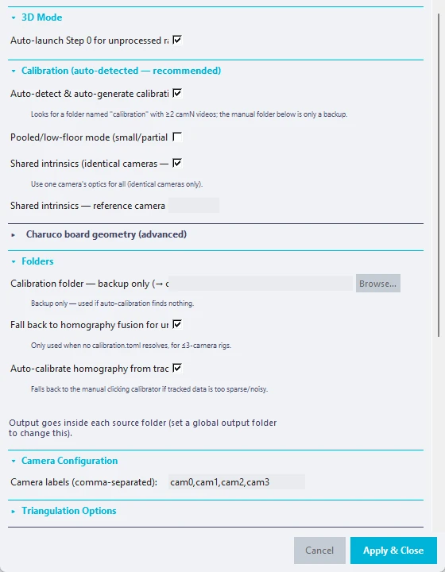
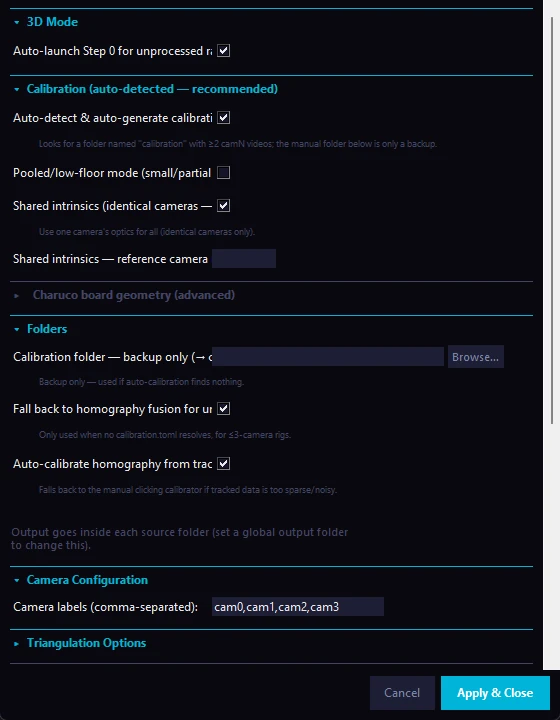

Overview#
You need
- Step 0 output: corrected, synchronised videos from
bonsai_video_corrector.py. - A calibration recording: a Charuco board recorded by all cameras, run through the same Step 0 and with "calibration" in its session name. CUBE finds it and creates
calibration.tomlautomatically. Acalibration.tomlmade by hand still works as a backup (see Camera Calibration). - Software:
aniposelibandimageio-ffmpeginstalled in theCUBEenvironment, plus DeepLabCut as for 2D. - A CUDA GPU: strongly recommended; CPU inference works but is very slow.
| Requirement | Notes |
|---|---|
| Step 0 files | {cam_label}_{session_id}_corrected.mp4, *_corrected_timestamps.csv and {session_id}_correction_report.json for each session |
| Calibration recording | A Charuco board recording whose session name contains "calibration", under the same source folders |
aniposelib |
pip install aniposelib inside the CUBE environment |
| DeepLabCut | In the same environment, as for 2D Step 1 |
Group assignments, autosave, notifications, pre-processing, the Video Explorer and the Analyser work without changes.
Rigs with up to three cameras and no calibration. If no calibration can be found and the rig has three or fewer cameras, Step 1b falls back to a floor-plane homography fusion of the per-camera 2D keypoints instead of stopping (see the next section and the Folders settings). A calibrated rig always triangulates in full 3D, whatever the number of cameras.
Enabling 3D Mode#
- Add your Step 0 output folders to the main panel (the same folder list all steps use). Include the folder that holds your calibration recording's output (or its
_calibration/subfolder). Assign experimental groups if you need them; the group labels carry through to all session output. - Click the 3D DLC + Anipose card (Step 1b, the alternative to 1a).
- Click 3D DLC Settings.
- Confirm that Auto-detect & auto-generate calibration.toml is ticked (the default) and enter your Charuco board's physical measurements under Charuco board geometry. Only fill in the Calibration folder field to supply a hand-made
calibration.tomlas a backup. - Check the camera labels and any triangulation options (see 3D Settings Reference).
- Click Apply & Close, then Run Step 1b. The pipeline runs unattended and sends notifications at its main milestones. Its first task is to resolve the calibration (and to calibrate automatically when needed).
Clicking the Step 1b run button also switches 3D mode on; there is no separate enable checkbox in the settings.


The Four Phases#
Phase 1 — Session discovery and calibration#
CUBE scans every source folder for finished Step 0 sessions. A session is a set of {cam_label}_{session_id}_corrected.mp4 files that share one session_id.
- A session is accepted only if at least 2 camera videos exist and every camera in the correction report has
"status": "done". - Sessions are processed in order of
session_id, which is chronological because it is a date and time. - On a rerun, CUBE uses the source folders saved at the end of the first run, so you do not have to add them again.
- If the same
session_idappears in several folders, the first one wins. - CUBE then resolves the calibration (see Camera Calibration).
Phase 2 — Per-camera adaptation and tracking#
For each camera label (cam0 to cam3 by default), CUBE:
- Crops the camera's frames if you set a crop region for it.
- Picks a representative video: the one with the fewest duplicated frames, which shows the most genuine animal movement.
- Adapts the SuperAnimal Quadruped model to your recording conditions using that video. The adapted weights are cached and reused on later runs for the same camera.
- Tracks every corrected video of that camera. On a GPU out-of-memory error the batch size is halved and the video retried, down to a batch size of 1; if it still fails, that video is skipped and the error is logged.
- Masks fill frames. Frames that Step 0 marked as duplicated fill frames get a likelihood of 0 for every body point, so they cannot contribute confident detections to triangulation.
- Frees GPU memory before the next camera.
After tracking, the calibration can be refined from the tracked keypoints (see Calibration Refinement below). This is skipped in homography fallback mode.
Phase 3 — Triangulation and videos#
Sessions are triangulated in parallel (up to 4 at once). For each session:
- Body points. Only body points present in all camera files are triangulated. If a camera lacks one, a warning is logged and that camera still contributes the points it has.
- Triangulation. A body point is triangulated from the cameras that see it with a likelihood above the pre-triangulation gate (default 0.4). A set of anatomical and temporal checks then removes or repairs implausible points: bone-length limits, a limit on frame-to-frame jumps, geometric priors for weakly tracked points (ears, hips, knees, nose) and a recovery step for frames seen by only one camera. RANSAC and confidence-weighted triangulation exist as options but are off by default.
- Confidence. The per-camera likelihoods are combined into one value per point:
min(default, a point is only confident if all cameras agree, recommended for behaviour classification),mean, ormax(a point is confident if any camera is). - Gate. If Point confidence threshold is above 0, points below it have their likelihood set to zero and are treated as missing in Step 2.
- 3D file. The result is written to
{session_id}_3d_filtered.h5with the columnsx,y,zandlikelihoodfor every body point. Writing is atomic, and a session whose file already exists is skipped (so reruns are safe). A file produced by the homography fallback has nozcolumn; if a real calibration becomes available later, it is replaced by a triangulated one, but a triangulated file is never overwritten by a fusion result. - Quad video.
{session_id}_quad.mp4is a 2×2 grid of the corrected camera videos (cam0 top left, cam1 top right, cam2 bottom left, cam3 bottom right). All streams are scaled to the most common resolution, and encoding uses the GPU encoder when available and the CPU otherwise. - Quality-control files (on by default): an optional 3D skeleton video, a 2D keypoint overlay on the quad video, a body-point colour legend, a per-camera likelihood plot, and 3D-to-2D reprojection videos in which a dot is the raw 2D detection and a ring is the 3D point projected back, so the gap shows the reprojection error.
In homography fallback mode, Phase 3 first asks you to calibrate each camera pair that has no cached homography (a window opens to click matching floor points, or CUBE calibrates automatically from the tracked poses when Auto-calibrate homography from tracked poses is on). The fused 2D file is written to the same {session_id}_3d_filtered.h5 name. The skeleton video is skipped because it needs z coordinates.
Phase 4 — Passing results on to Steps 2 to 5#
- The original source folders are saved, so reruns do not need them added again.
- The list of video folders is replaced by the session output folders, so Steps 2 to 5 find every session without any action from you.
- Group labels are carried over from each source folder to its session folder.
- Pre-processing (Step 2) runs for each session and writes its files, including the keypoint file with the z column kept and a copy of the quad video for example clips, under
CUBE 2 - Preclustering files.
If Auto-run analysis is on, the pipeline continues straight into Steps 2 and 3.
3D Settings Reference#
Open 3D DLC Settings from the Step 1b card. Many advanced sections are collapsed by default. Defaults are shown as in the window.
3D Mode#
| Setting | Default | Description |
|---|---|---|
| Auto-launch Step 0 for unprocessed raw recordings | On | Runs Step 0 first for raw recordings that have not been corrected yet |
Calibration (auto-detected, recommended)#
| Setting | Default | Description |
|---|---|---|
| Auto-detect & auto-generate calibration.toml | On | Looks for a folder named "calibration" with at least 2 camN videos (Step 0's _calibration/ output works) and calibrates it with the board settings below |
| Charuco board — squares (X) | 8 | Squares across the width. Must match the printed board |
| Charuco board — squares (Y) | 6 | Squares across the height |
| Square length (mm) | 14.88 | Side of one square, measured on the board |
| Marker length (mm) | 11.16 | Side of one ArUco marker, measured on the board |
| ArUco marker bits | 4 | Marker bit size |
| ArUco dictionary size | 50 | Number of markers in the dictionary |
| Pooled/low-floor mode | Off | For small or partial boards that never fill the frame enough for the usual corner requirement |
| Shared intrinsics | On | Uses one camera's optics for all cameras. Only for identical cameras |
| Shared intrinsics — reference camera | blank (auto) | Which camera supplies the optics |
The board values above are the defaults of the app. Measure your own board and change them to match it.
Folders and homography fallback#
| Setting | Default | Description |
|---|---|---|
| Calibration folder — backup only | empty | Folder with a hand-made calibration.toml. Used only if auto-calibration is off, finds nothing or fails |
| Fall back to homography fusion for uncalibrated rigs of up to 3 cameras | On | Used only when no calibration.toml can be resolved. Switch it off to make an uncalibrated rig stop with a "calibration missing" error |
| Auto-calibrate homography from tracked poses | On | Calibrates the homography from the tracked keypoints without clicking. Falls back to the manual clicking calibrator if the data are too sparse or noisy |
Output goes inside each source folder, or into the global output folder if you set one in the main window.
Camera Configuration#
| Setting | Default | Description |
|---|---|---|
| Camera labels | cam0,cam1,cam2,cam3 |
The label prefixes of your Step 0 file names. Change them if you used other camera names in Bonsai |
Triangulation Options#
| Setting | Default | Description |
|---|---|---|
| Confidence aggregation across cameras | min | min (safest), mean or max (most permissive) |
| RANSAC triangulation | Off | Rejects camera views with large reprojection error. Off after testing found plain triangulation better |
| Confidence-weighted triangulation (LOST) | Off | Weights each camera by its confidence. Takes precedence over RANSAC when on |
| Bone-length-constrained refinement | On | Refines the points so bone lengths stay consistent |
| Two-link geometric prior for weak ear, hip and knee points | On | Estimates weakly tracked points from their neighbours |
| RANSAC reprojection threshold (px) | 0.5 | Only used when RANSAC is on |
| Point confidence threshold | 0 (off) | Likelihood set to zero below this value after triangulation. A value of 0.3 to 0.5 excludes poor points from the features |
| Pre-triangulation likelihood gate | 0.4 | A camera view whose 2D likelihood is below this is left out of triangulation. 0 turns it off |
| Temporal median filter (frames) | 3 | Removes single-frame jitter per body point and axis. Must be odd; 0 turns it off |
Geometric and temporal recovery gates (a collapsed sub-section; all on unless stated):
| Setting | Default |
|---|---|
| Hard anatomical bone-length gate | On |
| Torso-hub bone-length gate (neck-back) | On |
| Frame-to-frame displacement clamp (20 mm + 2400/fps, rolling baseline) | On |
| Nose multi-anchor geometric prior (eyes and jaw) | On |
| Ray and temporal fallback for frames seen by one camera | On (max gap 1.5 s, max disagreement 60 mm) |
| Face rigid-cluster recovery (upper jaw) | On |
| Weak-tier extra recovery (jaw, thigh, knee) | Off (max gap 3.0 s, max disagreement 90 mm) |
| Hind-paw floor pin | On (longest continuous lift 10 s, simultaneous dual lift 0.2 s) |
| Exclude turned-away camera on disagreement (nose) | Off (angle threshold 135°) |
Calibration Refinement#
Board calibration can leave several pixels of reprojection error. These settings refine calibration.toml using real DLC keypoints as extra correspondences before triangulation.
| Setting | Default | Description |
|---|---|---|
| Refine calibration from pose keypoints | On | Pools confident keypoints across sessions and runs a bundle adjustment, then an orthogonality refinement. Writes calibration_refined.toml next to the original, never overwriting it, and only when it lowers the reprojection error |
| Assume about 90° orthogonal camera rig | On | Adds the known angle between neighbouring cameras (cam0-cam1, cam1-cam2, and so on) as a soft prior. Turn off if your cameras are not at a consistent angle |
| Expected angle between cameras (°) | 90.0 | Used only with the previous setting |
| Orthogonality prior strength (0 to 1) | 0.3 | Higher trusts the angle more, lower trusts the keypoint data more |
| Angle tolerance guardrail (°) | 15.0 | If the first refinement already differs from the expected angle by more than this, the prior is skipped for that camera pair and a warning is logged |
Post-processing and Visualization#
| Setting | Default | Description |
|---|---|---|
| Delete camera videos after quad composite | Off | Frees disk space; cannot be undone |
| Delete per-camera H5s after 3D H5 is created | Off | Frees disk space; cannot be undone |
| Export 3D skeleton visualization video | On | A matplotlib animation. It runs on the CPU and is slow; switch it off for routine runs |
| Draw DLC keypoint overlay on the quad video | On | Overlay dots (radius 3 px) and thin skeleton lines |
| Generate body-point colour legend | On | A PNG legend |
| Generate per-camera likelihood QC plot | On | Likelihood before triangulation |
| Generate 3D-to-2D reprojection QC videos | On | Per camera and as a bordered quad |
Other sections (collapsed by default)#
- Per-camera 2D pose cleaning (off): silhouette containment and head-cage bone-length gates before triangulation, still being validated on more rigs.
- Per-camera crop: set a crop region per camera with a preview dialog.
- Auto-detect starved cameras (off): lowers the detection threshold for a camera that yields too few detections. A value you set manually overrides it.
- Per-camera adaptation bounding-box threshold override: a separate threshold for one camera (blank uses the shared value).
- Session discovery: Scan video source folders for sessions lists the sessions CUBE would process.
Output Files#
Each completed session has a folder under CUBE 1b - 3D DLC in the run folder (see Section 5):
CUBE 1b - 3D DLC/<session_id>/
<session_id>_3d_filtered.h5 the triangulated 3D keypoints
(body points with x, y, z and likelihood)
<session_id>_quad.mp4 the 2x2 composite of the corrected camera videos
<session_id>_skeleton3d.mp4 the 3D skeleton animation (if switched on)
quality-control files keypoint overlay, body-point legend, per-camera
likelihood plot, reprojection videos (if switched on)
Step 2 then writes the pre-clustering files for each session (keypoint H5 and CSV with z kept, a copy of the quad video and the body-point confidence report) under CUBE 2 - Preclustering files.
How Downstream Steps Differ in 3D Mode#
Step 2. Unchanged. The converter reads the standard format, and the presence of the z column marks the file as 3D for Step 3.
Step 3. CUBE uses 3D feature extraction when it finds 3D data:
| Feature | 2D mode | 3D mode |
|---|---|---|
| Pairwise distances | √(dx²+dy²) |
True 3D distance √(dx²+dy²+dz²) |
| Velocities | 2D magnitude | 3D magnitude |
| Angular features | Yes, if spine landmarks exist | Not computed (world coordinates are already scale-invariant) |
| Body-size normalisation | Optional | Not needed |
| Temporal scales | 100 ms and 200 ms (plus 50 ms at 60 fps or more) | 100 ms and 200 ms, with lagged drift features and no within-bin variance |
UMAP, HDBSCAN, the classifier and the HMM do not depend on the number of dimensions and work unchanged.
Step 4. Unchanged. The Video Explorer plays the quad video, so you see all cameras at once while naming clusters.
Step 5. Unchanged. The bout tables have the same format as in 2D.
Camera Calibration#
CUBE creates calibration.toml for you. The manual route below is only a backup, or for when you want more control (a different board, pooled detection, fixed intrinsics).
Recommended workflow (automatic)
- Record a Charuco board in view of all cameras at once, with the same Step 0 pipeline as your real sessions. The session name only has to contain the word "calibration" (any capitals), for example
mouse1_calibration_2026-06-01. Step 0 detects this and copies it to_calibration/{session_id}/in the output folder. - Slowly rotate and move the board for 30 to 60 seconds, so that every part of the recording volume is covered and the board is seen at many angles in several cameras.
- In 3D DLC Settings, confirm that auto-calibration is ticked (it is by default) and enter the board's squares (X and Y), square length and marker length, measured with calipers on the printed board. These cannot be read from the video.
- Run the 3D pipeline as normal. Phase 1 finds the calibration recording, calibrates it automatically and writes
calibration.tomlto{calibration recording}/calibration_auto/calibration.toml. Later runs reuse the cached result.
The same calibration applies to all sessions recorded with those cameras in those positions. Record a new calibration only when the cameras have been moved or refocused. A new recording with "calibration" in its name is picked up automatically, and the most recent one wins.
Manual workflow (backup)
- Run
calibrate_cameras.pyon a calibration recording folder (--videos-dir) with your board's--squares-x,--squares-y,--square-lengthand--marker-length(see its--helpfor the other options). It uses the same logic as the automatic calibration. - Point CUBE to the result in 3D DLC Settings → Calibration folder.
Automatic calibration takes precedence whenever it finds a calibration recording.
Checking the quality. After a run, open the 3D skeleton video or the reprojection videos and check that the points look plausible. Jittery or drifting skeleton segments, or large gaps between dots and rings, mean a poor calibration.
If the reprojection error stays high after recalibrating (a few pixels or more is common with planar boards because of an ambiguity between focal length and depth), try Refine calibration from pose keypoints. It uses the keypoints already tracked across cameras, writes a separate calibration_refined.toml, never changes your original file, and takes effect only if it improves on it.
Homography calibration (rigs of up to 3 cameras without a calibration). The Homography Calibrator window opens the first time a camera pair is needed. Click four or more matching physical reference points in both views (floor corners and one wall point) and save; the result is cached for every later session with that rig. If a crop region is set for a camera in fallback mode, the clicked points and the fusion use different coordinate systems and a warning is logged; clear the crop region or click the points on the same cropped region.
Troubleshooting (3D)#
"No calibration available" / "calibration.toml not found". Both calibration routes came up empty. Automatic calibration found no folder with "calibration" in its name and at least 2 camN videos under your source folders: check that you recorded a calibration session through Step 0 with that word in its name and that the source folders include the Step 0 output. The manual backup needs a file named exactly calibration.toml in the Calibration folder. Fix one of the two. If automatic calibration keeps failing for another reason (for example a board-detection error), the log shows an [auto-calib] warning that names it. With three or fewer cameras and the homography fallback ticked, CUBE uses the fallback instead of stopping.
"No complete Step 0 sessions found". Check that the source folders hold *_corrected.mp4 files from bonsai_video_corrector.py, that every camera in {session_id}_correction_report.json has "status": "done", and that at least 2 cameras produced output. If you have run before and the folders have moved, run once with the correct folders in the main panel; the paths are saved again at the end of Phase 4.
"No H5 for cam_X — will be skipped in triangulation". Tracking produced no output for that camera video. Check the log for inference errors. Common causes are a damaged video, a DLC installation problem, or a video too short for the adaptation.
Out of GPU memory even at batch size 1. Close other programs that use the GPU. Cameras are processed one after the other, and there is no way to reduce the parallelism further. As a last resort, install the CPU build of PyTorch (inference will be much slower).
Triangulation gives all-zero or NaN coordinates. The most common cause is a wrong calibration.toml. For an automatic calibration, check the log for its reprojection error ([auto-calib] Average reprojection error: ...px): a value over about 1 px means the calibration recording needs to be redone with more varied board coverage, or the board's square and marker lengths were entered wrongly. Check that the camera order in the calibration matches your camera labels (cam0, cam1, ...). Automatic calibration takes this from the camN_... file names, so it is mostly a problem for hand-made calibrations. If you switched RANSAC on, try switching it off.
The quad video has the wrong aspect ratio or black bars. All streams are scaled to the most common resolution across cameras, so if your cameras differ in resolution some streams are scaled. This is expected.
The skeleton video is very slow. It is drawn frame by frame on the CPU. A 30-minute recording at 30 fps has 54,000 frames and typically takes 10 to 30 minutes. Switch the option off for routine runs and use it for visual checks of specific sessions.
Sessions are processed again on every run. CUBE skips a session whose {session_id}_3d_filtered.h5 already exists. If the file was deleted, or the output folder changed, the session is triangulated again. Existing per-camera _filtered.h5 files are detected before inference starts, so tracking is not repeated for them.
For the full Group Predictor documentation, see GROUP_PREDICTOR_REFERENCE.md.